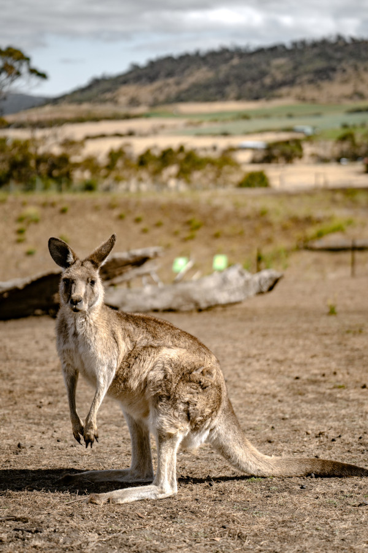

This page demonstrates how images work on the web by comparing file formats, dimensions, file sizes,
proportions, resizing methods, and the difference between proper editing and improper CSS-only changes.
The goal is to show how image choices affect quality, performance, and appearance in a real website.
Demonstrating Image Manipulation with a Kangaroo Photograph from Pexels
I chose this portrait photograph from
Pexels
by Sunil Nepali because it combines rich fur detail, visible ground texture, and an open landscape
with a softly blurred background and natural color variation throughout the scene. Those qualities
make it a strong example for demonstrating resizing, format conversion, proportionality, and image
quality on the web. Photographer: Sunil Nepali. Source: Pexels. Original format: JPG. Dimensions:
4373 × 6560 pixels. File size: 3.06 MB.
Original Image and Format Conversions
The full original downloaded image is not embedded on this page because it is too large for
web display. Instead, a reduced preview appears below, and the original file is available
through the link. Converted versions are also available as direct file links.

Reduced preview — 600 × 900 pixels — full original JPG (4373 × 6560, 3.06 MB) linked below
This version uses inline CSS to display the image smaller in the browser without creating
a new file. CSS changes only the display size; the file dimensions remain 600 × 900
pixels, the file size remains 162.78 KB, and the browser still downloads the full linked file.
The 4373 × 6560 original is available only through the Original JPG link above.
CSS downsized display — shown at 200px wide — source remains 600 × 900 pixels and 162.78 KB
Proper Reduction of Image with Editor
This version was resized in an image editor so the saved file contains fewer pixels, a smaller
download size, and the same aspect ratio. Editor resizing improves performance because the browser
receives a file that matches the display size more closely.
These examples use the properly resized 600 × 900 pixel image with mismatched CSS width and
height values. At least one CSS dimension matches the source image in each example, but the other
dimension is changed, which stretches the kangaroo and distorts its proportions.
Example A — CSS 600 × 600 pixels — width matches source, height compressed, body appears squashed
Example B — CSS 600 × 400 pixels — width matches source, image looks flattened vertically
Example C — CSS 400 × 900 pixels — height matches source, image looks pinched horizontally
Example D — CSS 267 × 900 pixels — height matches source, image looks extremely narrow
Improper Enlarging with CSS
Both images below are displayed at the same CSS width of 600 pixels. The properly resized file
already contains 600 pixels of width, so it stays sharp. The 25% version contains only 150
× 225 pixels, so forcing it to 600 pixels wide makes the browser invent extra detail and
the image becomes blurry.
25% source — 150 × 225 pixels — displayed at 600px wide — soft and blurry from upscaling
Demonstrating Image Manipulation with a Personal Geometry Photograph
This personal geometry photograph shows my hand holding a perfectly round bottle cap between my
fingers. I chose this image because the circular cap provides a clear reference shape that makes
it easy to see when image proportions become distorted during CSS resizing. Original format: JPEG.
Dimensions: 768 × 1024 pixels. File size: 34.49 KB.
Original Image and Format Conversions
This is my original personal geometry photo before any conversion, CSS changes, or editor resizing.
Converted versions are available as direct file links below.
Original personal geometry image — 768 × 1024 pixels — 34.49 KB
This version uses inline CSS to display the original image smaller in the browser without creating
a new file. CSS changes only the display size; the file dimensions remain 768 × 1024 pixels,
the file size remains 34.49 KB, and the browser still downloads the full linked file.
CSS downsized display — shown at 200px wide — source remains 768 × 1024 pixels and 34.49 KB
Proper Reduction of Image with Editor
This version was resized in an image editor so the saved file contains fewer pixels, a smaller
download size, and the same aspect ratio. Editor resizing improves performance because the browser
receives a file that matches the display size more closely instead of downloading a larger original
and scaling it down in the browser.
These examples use the properly resized 600 × 800 pixel image with mismatched CSS width and
height values. At least one CSS dimension matches the source image in each example, but the other
dimension is changed, which stretches the hand and bottle cap and distorts the round cap shape.
Example A — CSS 600 × 600 pixels — width matches source, height compressed, cap appears squashed
Example B — CSS 600 × 400 pixels — width matches source, image looks flattened vertically
Example C — CSS 400 × 800 pixels — height matches source, image looks pinched horizontally
Example D — CSS 267 × 800 pixels — height matches source, image looks extremely narrow
Improper Enlarging with CSS
Both images below are displayed at the same CSS width of 600 pixels. The properly resized file
already contains 600 pixels of width, so it stays sharp. The 25% version contains only 150
× 200 pixels, so forcing it to 600 pixels wide makes the browser invent extra detail and
the round bottle cap becomes blurry and soft.
Properly resized source — 600 × 800 pixels — displayed at 600px wide — sharp detail retained
25% source — 150 × 200 pixels — displayed at 600px wide — soft and blurry from upscaling
Submission Notes
What AI Helped With
AI helped me organize the assignment requirements, structure semantic HTML sections and articles,
verify image references against the actual files in my images/ folder, build responsive
image comparison layouts, and explain the difference between CSS resizing and editor resizing.
Challenges, Frustrations, and What I Learned
One challenge was keeping track of all the different image versions, dimensions, and file sizes while
making sure each figure used the correct filename and caption. I learned that CSS resizing changes only
how an image appears on the page and does not reduce file size, while editor resizing changes the
actual pixel dimensions and download size. I also learned that setting incorrect width and height values
in CSS can distort proportions, and enlarging a very small image makes it look blurry because the
browser has too little pixel data to work with. The personal geometry section is still waiting on my
own photograph and converted files.